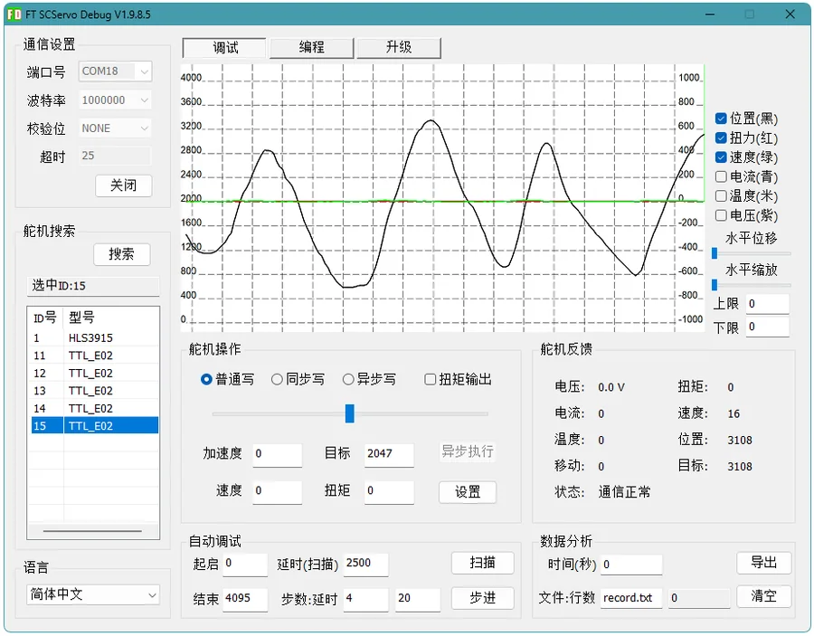

上电可读
单圈绝对角度不依赖回零流程，适合需要快速启动、快速恢复状态的关节和转向机构。
无需回零等待WHAT IT SOLVES
上电即可知当前位置，校准参数掉电不丢失，无需回零操作。
体积小巧，易于集成在减速组输出端，直接反馈真实机构角度。
与多种总线设备共用同一总线，简化机器人系统复杂度。
单圈绝对角度不依赖回零流程，适合需要快速启动、快速恢复状态的关节和转向机构。
无需回零等待安装在同步轮、齿轮、减速器输出端或关节内部，反馈真实机机构角度。
适合集成到减速组内部多个编码器、多种设备可接入同一总线，适合机械臂、灵巧手、转向模块等复合模块系统。
一条总线控制全部总线设备紧凑结构尺寸和 HC1.25 接口更适合集成到小型机器人内部，降低传感器布线难度。
适合嵌入式安装BOARD DETAIL


TTL BUS SYSTEM
通过 TTL Adapter (A)、Hub 板 或带单线 TTL 接口的控制器，可以把多个编码器和多种其它类型的总线设备接入同一通信链路。每个设备设置独立 ID 后，上位机或 MCU 可以集中控制。
FD SOFTWARE
Wiki 已提供 FD 调试软件、Python 快速上手、C++ / Arduino 快速上手等资料。FD 软件可以把接线、供电和程序问题分开排查，降低第一次上手的调试成本。
先用 TTL Adapter (A) 或其它 USB 转单线 TTL 控制器接入 E02，打开 FD 软件搜索设备。确认读数稳定后，再根据 Wiki 中的 Python、C++ / Arduino 示例接入自己的项目。



MAGNET INSTALLATION
TTL Encoder E02 通过检测径向磁铁旋转来输出角度。安装时应让磁铁旋转轴线尽量对准编码 IC 中心，并控制合理间距大约 0.8~1.5 mm 之间；机械结构越稳定，反馈越精准。

APPLICATIONS


SPECIFICATIONS

PACKAGE
DOCUMENTATION
调试工具、SDK 与开发教程等资料可参考产品 Wiki。